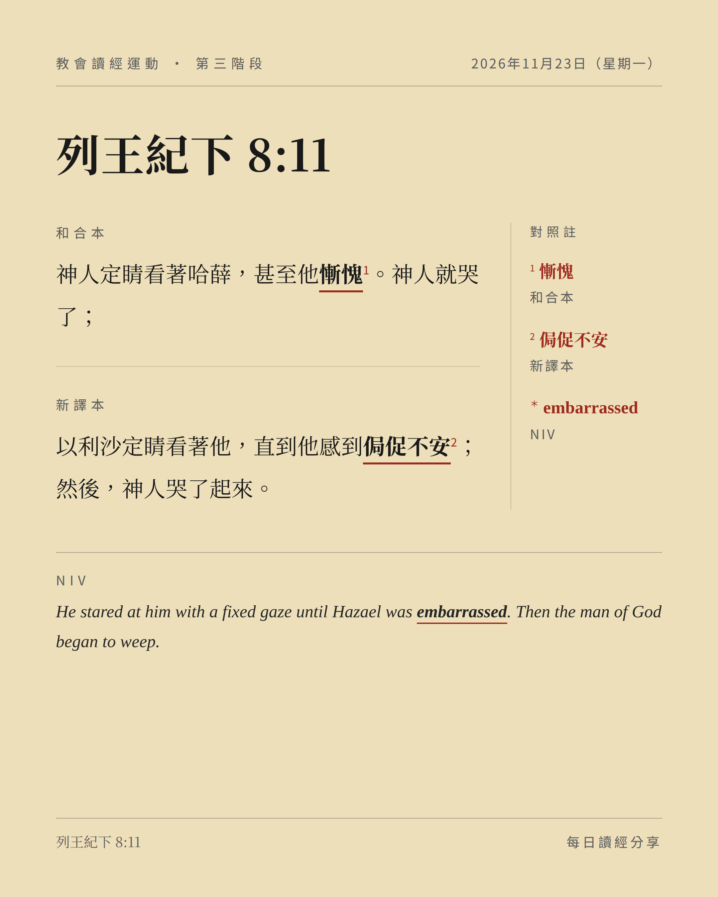

中文朗讀（新譯本）
English reading (NIV)
神人定睛看著哈薛，甚至他慚愧。神人就哭了；
以利沙定睛看著他，直到他感到侷促不安；然後，神人哭了起來。
He stared at him with a fixed gaze until Hazael was embarrassed. Then the man of God began to weep.
我哋讀開嘅和合本作「甚至他慚愧」；新譯本譯作「侷促不安」，NIV 亦作 embarrassed（尷尬不安）。「慚愧」係心知自己有過錯；「侷促不安」係俾人睇穿咗、坐立不安。以利沙定睛望住哈薛，望到佢唔自在，跟住自己哭起上嚟 — 因為先知已經預見呢個人將來要對以色列人行嘅惡（12節），而哈薛嗰一刻，只係感覺到俾人睇透。
神唔使出聲，淨係定睛看著，已經足夠叫人唔自在。嗰份唔自在，可能正係良心被觸動嘅開始。